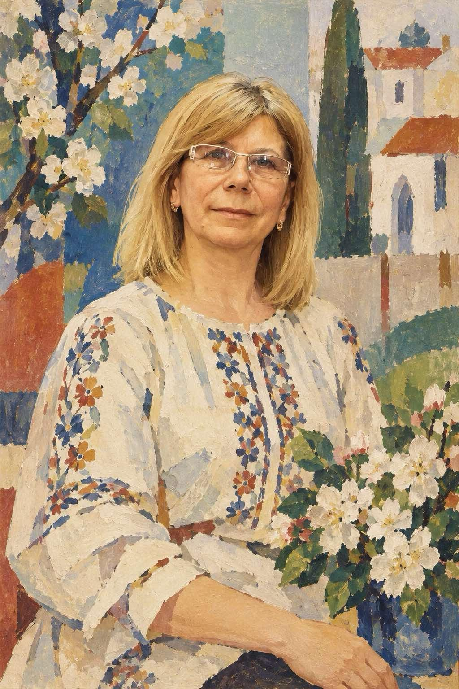

A scrie despre profesori , în general, este un gest nobil; a scrie despre profesorii de
limba o profundă reverență adusă spiritului uman. Într-o lume dominată de
pragmatism, de materialism, de tehnologii și de viteză, acești profesori sunt marii
cronicari ai sensibilității și străjerii celui mai fragil teritoriu – interiorul omului. Prin simbol,
emoție și poveste, ei decodează lumea. Îi învață pe copii că, dincolo de ecrane, există
un spațiu infinit unde poți dialoga, deopotrivă, cu țăranul din Câmpia Sorocii al lui Ion
Druță și cu intelectualul lui Camil Petrescu. A scrie despre acești dascăli înseamnă a le
mulțumi pentru că mențin trează capacitatea societății de a visa și de a empatiza.
Mai întâi, mă voi întoarce în timp și voi scrie despre acei profesori, care au lăsat, încă
de la înființarea liceului, amprente pe destine și că semințele plantate de ei au rodit. Cu
profundă recunoștință, voi menționa numele doamnelor profesoare David Serafima și
Untu Tamara, adevărate călăuze în modelarea caracterelor tinere.
Mă întorc în prezent, pentru a scrie despre colegii din comisia metodică, cu care
împart proiecte, zâmbete și priviri, iar acest gest se transformă într-un act de solidaritate
profesională, prețuire colegială și conștiință de breaslă. Să scrii despre profesorii cu
care lucrezi zi de zi înseamnă, de fapt, o validare a efortului nevăzut ( orele de pregătire
pentru lecții și orele de corectat noaptea, oboseala acumulată, consumul emoțional și
dedicarea dincolo de fișa postului ) și aducerea în lumină a sacrificiului neobservat de
publicul larg. Scriind despre colegii mei, încerc să le definesc standardele și valorile
care îi reprezintă și în care cred și eu, demonstrând că succesul lor este și succesul
întregii comisii metodice. Calitățile care îi reprezintă - stoicismul (Andrieș Natalia),
responsabilitatea (Dormenco Daria), perseverența (Spravnic Ana), toleranța (Toma
Ludmila), empatia (Danoi Ana), spiritul constructiv (Cucu Tatiana)– funcționează ca
un mecanism viu în care fiecare valoare o susține și o completează pe cealaltă.
Legătura dintre ele reprezintă o trecere firească de la stăpânirea de sine către
deschiderea profundă și armonioasă față de ceilalți și relaționarea cu lumea. Această
constelație de valori este o descriere perfectă a modului în care profesorii din comisia
noastră metodică își înțeleg și își exercită profesia zi de zi. Ea se reflectă în activitatea
academică zilnică prin crearea climatului de învățare, pentru ca fiecare voce să fie
auzită, să fie respectată diversitatea de opinii și fiecare argument să fie valorizat.
Profesorii îi învață pe elevi să privească lumea prin ochii personajelor, să empatizeze cu
ele, promovând cartea ca un ghid fundamental în formarea personalității elevilor, dar și
demonstrând că lectura este o modalitate de a înțelege mai bine realitatea
înconjurătoare și de a consolida propriul sistem de valori. Susținerea examenelor și
participarea la olimpiadele școlare este o prioritate în activitatea academică. Totuși, axa
fundamentală a educației se centrează pe reperele morale și culturale, care își găsesc
manifestare în actul lecturii și în atașamentul față de carte, transmis prin exemplul
personal. Asemeni eului liric din volumul de poezie ,,Amarele confesiuni’’ de Dumitru
Matcovschi, doamna Dormenco Daria este un ,,Om al Cetății’’ cu numele ,,Alexei
Mateevici’’, care și-a asumat rolul de ghid educativ de peste trei decenii. Da,
confesiunile sunt ,,amare’’, pentru că privește cu durere spre societatea contemporană,
în care oamenii sunt dezbinați, atrași în jocuri politice. Cu toate acestea, versurile îi sunt
o lecție de curaj, dragoste de limba maternă și de pământul străbun. Doamna Andrieș
Natalia este profesorul care se adaptează cu ușurință la schimbările din societate și
ține piept tuturor provocărilor, apărute în situațiile de criză, datorită ambiției, tenacității
și rezistenței feminine, un comportament asemănător cu cel al protagonistei romanului
lui Margaret Mitchell,,Pe aripile vântului’’ -- Scarlet O’Hara. Curajul, demnitatea și
toleranța sunt calități cu care doamna profesoară Spravnic Ana a pornit de acasă, din
familie, în lumea pedagogiei, învățându-i pe discipolii săi, că, indiferent de circumstanțe,
ar trebui să-și păstreze moralitatea, precum Annemarie, personajul principal din
romanul istoric ,,Numără stelele’’ de Lois Lowry. Doamna profesoară Toma Ludmila
își propune să fie, pentru elevii săi, ,,copacul’’ simbolic din nuvela lui Nicolae Esinencu
,,Copacul care ne unește’’ , o ancoră în pământul strămoșesc, care îi ,,unește’’, le dă un
sentiment al apartenenței și nu îi lasă să se piardă în timp. Într-o eră a suprainformării,
doamna Cucu Tatiana transformă sala de clasă dintr-un simplu spațiu într-un laborator
de dezvoltare personală, etică și socială; îi echipează pe elevi cu un set de competențe
esențiale pentru a înțelege că formulele gata fabricate ale societății nu le mai pot
explica lumea și că, în plină criză existențială, cărțile, lectura, sunt colaci de salvare în
a-și căuta propria identitate și propriul sens, la fel ca naratorul-personaj din cartea lui
Constantin Cheianu ,,M-a făcut mama existențialist’’. Pentru mine, personajul Onache
Cărăbuș, din romanul ,,Povara bunătății noastre’’ de Ion Druță, este modelul spiritual,
care m-a ajutat să înțeleg că bunătatea la clasă nu este o slăbiciune, ci o povară nobilă.
Asemenea lui Onache, mi-am asumat rolul de a rămâne o călăuză de omenie, empatie
și verticalitate pentru elevii mei, învățându-i nu doar litera cărții, ci mai ales arta de a
rămâne oameni în fața oricăror furtuni ale vieții.
A fi un reper cultural în fața unei generații digitale înseamnă a fi și un constructor de
competențe reale. Iar baza acestei construcții este promovarea normelor limbii române
literare. Într-o epocă a mesajelor fragmentare și a abrevierelor, profesorii din comisia
metodică acționează ca facilitatori ai exprimării corecte orale sau scrise, prin intermediul
unui spectru de activități la clasă și în afara orelor de curs: ateliere de creație, de
scriere, de discuție, de lectură, proiecte inter-, transdisciplinare, concursuri raionale,
republicane, naționale, întâlniri cu scriitorii, conferințe, manifestări dedicate Zilei Limbii
Române, Zilei Culturii Naționale și a Poetului Național Mihai Eminescu, Zilei de naștere
a lui Alexei Mateevici, marilor scriitori români etc. Organizăm și desfășurăm Decada
comisiei metodice, participăm activ în desfășurarea celorlalte decade.
Profesorii realizează zilnic un miracol pedagogic: îi învață pe elevi să-și iubească
rădăcinile, vorbindu-le în limba maternă, dar le oferă și aripi să zboare, arătându-le că
aceleași mari întrebări despre viață, moarte, iubire și destin și le-au pus și marile
personalități ale omenirii. Ceea ce am scris a fost un exercițiu de admirație absolută.
Am adus în fața ,,reflectoarelor’’ acei oameni care își consumă energia și sufletul și care
le vor aminti tuturor că, dincolo de orice reforme și tehnologii, inima unei școli bate
acolo unde un profesor deschide o carte și începe să citească cu voce tare,
transformând spațiul din clasă într-o oază de liniște și reflecție.
Peste ani, acest text va fi mărturia modului în care o mână de oameni au ținut aprinsă
flacăra culturii, a lecturii și a cărții într-o perioadă plină de provocări și schimbări digitale;
flacăra identității culturale și lingvistice.